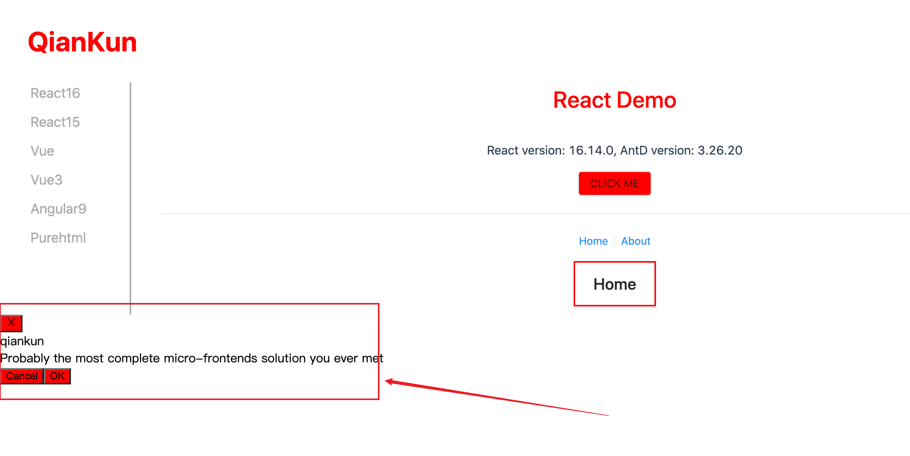

微前端-qiankun
对微前端的理解
微前端的核心理念是将前端应用程序看作是一个整体，由多个独立的部分组成。每个部分被视为一个微前端应用，它们可以具有自己的技术栈、开发流程和团队组织。这种方式使得团队可以独立开发和部署各个子应用，减少了协调和合并的复杂性。
为什么 Iframe 无法胜任微前端的工作？
IFrame 在传统的前端开发中是一种常见的技术，用于在页面中嵌入其他网页或应用程序。然而，在微前端架构中，IFrame 并不是一个理想的选择，主要是因为以下几个方面的限制：
隔离性和通信复杂性：IFrame 本身提供了一种隔离的环境，但这也带来了通信和数据交互的复杂性。由于每个子应用都在独立的 IFrames 中运行，它们之间的通信需要通过特定的机制，如消息传递，而这增加了开发和维护的复杂性。
性能和加载时间：每个 IFrames 都需要加载和渲染独立的 HTML、CSS 和 JavaScript。这意味着在加载微前端应用时，需要同时加载多个 IFrames，导致额外的网络请求和页面资源占用，可能会影响性能和加载时间。
样式和布局限制：IFrame 的内容在页面中是独立的，它们具有自己的 CSS 样式和布局上下文。这导致在微前端架构中难以实现全局样式的一致性，以及子应用之间的布局和交互的协调问题。
浏览器安全性限制：由于安全策略的限制，IFrame 之间的跨域通信可能受到限制，特别是在涉及跨域资源访问和共享数据时。这可能导致在微前端架构中需要处理复杂的安全性问题。
鉴于以上限制，微前端架构通常采用其他技术手段来实现子应用的拆分和集成，例如使用 Web Components、JavaScript 模块加载器等。这些技术能够提供更好的隔离性、通信机制和性能优化，使得微前端架构更具可行性和灵活性。
微前端运行原理
监听路由变化
匹配子应用
加载子应用
渲染子应用
监听路由变化
监听 hash 路由:
window.onhashchange监听 history 路由
history.go、history.back、history.forward 使用 popstate 事件 window.onpopstate
监听的方式
1 | |
重写: pushState、replaceState 需要通过函数重写的方式进行 劫持
1 | |
在 Vue 项目中，我们通过 this.$router.push 会触发 history.pushState 事件，this.$router.replace 会触发 history.replaceState 事件。
匹配子应用
监听路由的变化后，拿到当前路由的路径 window.location.pathname，然后根据 registerMicroApps 的参数 apps 查找子应用。因为子应用都配置了 activeRule。
1 | |
加载子应用
当我们找到了与当前路由匹配的子应用，接着就去加载这个子应用的资源。
1 | |
这个时候，我们就拿到了子应用的 html 文本。
但是我们不能给直接通过 container.innerHTML = html 将文本放到容器内，这样是无法显示的。
注意 浏览器处于安全考虑，放到页面上的 html 如果包含了 js 脚本，它是不会去执行 js 的。我们需要手动处理 script 脚本。
importHTML 加载资源/处理脚本
我们来封装一个函数 importHTML，专门来处理 html 文本。(qiankun内部引用的 import-html-entry 就是做这个事的。)
我们可以把加载子应用资源的 fetch 请求放到 importHTML 函数中，它还有如下几个功能：
将获取到的 html 文本，放到 template DOM节点中
获取所有的 Script 脚本
执行所有的 Script 脚本
1 | |
script 脚本分为 内联 脚本和外链脚本，这里需要分开处理，拿到内联脚本后，获取内容可以通过 eval 直接处理。如果是含有 scr 的 script 脚本，还需要拿到 src 的值，通过 fetch 去加载脚本。
我们在 getExternalScripts 方法中来处理
1 | |
然后我们就可以通过 execScripts 方法去调用 getExternalScripts，拿到所有的脚本内容后，执行！
1 | |
qiankun
基于 single-spa，通过 import-html-entry 包处理 html / css
1 | |
微前端的子项目是怎么引入到主项目里的
1 | |
容器指定路由匹配规则加载子应用，一旦路径匹配就会加载子应用资源
子应用打包输出格式为 umd，并且要允许跨域
1 | |
umd
umd全称是UniversalModuleDefinition，是一种通用模块定义格式，通常用于前端模块化开发中。
由于不同的模块化规范定义不同，为了让各种规范的模块可以通用，在不同的环境下都可以正常运行，就出现了umd这个通用格式。
特点
umd 格式是一种既可以在浏览器环境下使用，也可以在 node 环境下使用的格式。它将 CommonJS、AMD以及普通的全局定义模块三种模块模式进行了整合。
1 | |
为什么 qiankun 要求子应用打包为 umd 库格式呢？
主要是为了拿到子应用在 入口文件 导出的 生命钩子函数，这也是主应用和子应用之间通信的关键。
bootstrap
mount
unmount
获取子应用资源 - import-html-entry
HTML Entry + Sandbox 是 qiankun 区别于 single-spa 的主要两个特性。
single-spa和qiankun最大的不同，大概就是qiankun实现了html entry，而single-spa只能是js entry
通过 import-html-entry，我就能像 iframe 一样加载一个子应用，只需要知道其 html 的 url 就能加载到主应用中。
importHTML 几个核心方法:
首先importHTML的参数为需要加载的页面url，拿到后会先通过 fetch方法 读取页面内容。
1 | |
返回值
- template - string - 处理过的 HTML 模板。
- assetPublicPath - string - 资源的公共途径。
- getExternalScripts - Promise<string[]> - 来自模板的脚本 URL。
- getExternalStyleSheets - Promise<string[]> - 来自模板的 StyleSheets URL。
- execScripts - (sandbox?: object, strictGlobal?: boolean, execScriptsHooks?: ExecScriptsHooks): - Promise
- the return value is the last property on window or proxy window which set by the entry - script. - sandbox - optional, Window or proxy window.
- strictGlobal - optional, Strictly enforce the sandbox.
processTpl
它会解析html的内容并且删除注释，获取style样式及script代码。通过大量的正则 + replace，每一个步骤都做了很多适配，比如获取script脚本，需要区分该script是不是entry script，type是JavaScript还是module，是行内script还是外链script，是相对路径还是绝对路径，是否需要处理协议等等。
processTpl的返回值有 template，script，style，entry。
JS 沙箱
JavaScript 沙箱是一种安全机制，用于隔离和限制 JavaScript 代码的执行环境，以防止恶意代码或意外行为对系统造成损害。沙箱提供了一种受控的环境，限制了代码的访问权限和执行能力，确保代码只能在受限制的范围内操作。
JavaScript 沙箱通常用于以下情况：
- 在多租户环境中，确保不同用户或组织的代码相互隔离，防止相互干扰或访问敏感信息。
- 在第三方代码或插件中使用，以确保其代码不会对宿主环境造成潜在的安全漏洞或冲突。
- 在应用程序中执行用户提供的代码，例如在线代码编辑器或脚本执行环境，以防止恶意代码对用户数据或系统进行攻击。
- 在浏览器中执行不受信任的代码，例如浏览器插件或扩展，以保护用户的隐私和安全。
JavaScript 沙箱通过限制代码的访问权限、提供隔离的执行环境、使用安全策略和沙箱沙盒技术等手段来实现。常见的 JavaScript 沙箱技术包括沙盒环境、Web Worker、iframe、JavaScript 虚拟机等。这些技术通过限制代码的执行权限、提供独立的运行环境、隔离全局上下文等方式来确保代码的安全执行。
快照沙箱-SnapshotSandbox
缺点：
遍历 window 上所有属性，性能差
同一时间只能激活一个微应用
污染全局 window
优点：
可以支持不兼容Proxy的浏览器。
先了解 SnapshotSandbox 的功能
我们激活沙箱后，在 window 上修改的所有属性，都应该存起来，在下一次激活时，需要还原上次在 window 上修改的属性
失活后，应该将 window 还原成激活前的状态
我们来举个例子
1 | |
接下来，实现一个简易版的 SnapshotSandbox
- SnapshotSandbox 能够还原 window 和记录自己以前的状态，那么就需要两个对象来存储这些信息
1 | |
- 沙箱需要两个方法及作用
1 | |
我们先来实现沙箱内部细节：
1 | |
我们来验证一下，首先设置 window.city 一个初始值 beijing，然后初始化 沙箱，在第一次激活后，修改了 window.city 为 上海，那么应该在失活后，打印 beijing，再次激活时，window.city 是 上海
1 | |
不支持多个应用同时运行，因为污染了全局 window
1 | |
Legacy沙箱-LegacySandbox（单例）
不需要遍历 window 上的所有属性，性能比快照沙箱要好
基于 proxy 实现，依然操作了 window，污染了全局，同一时间只能运行一个应用
兼容性没有快照沙箱好
功能和 快照沙箱 一样，但内部实现是通过 proxy 实现的。
1 | |
ProxySandbox 沙箱（多例）
基于 proxy 代理对象，不需要遍历 window，性能要比快照沙箱好
支持多个应用
没有污染全局 window
应用失活后，依然可以获取到激活时定义的属性。
主要实现在 constructor 中，创建一个 fakeWindow 对象，通过 Proxy 代理这个对象，全程没有改变 window
只是在获取属性值的时候，如果在代理对象上没有找到想要的属性，才回去 window 中查找。
1 | |
应用间通信
我们可以通过 initGlobalState 来定义全局状态，并返回通信方法，建议在主应用使用，微应用通过 props 获取通信方法。
1 | |
微应用可以在导出的 mounted 钩子函数中获取 props，这个 props 中就包含了 onGlobalStateChange 和 setGlobalState 方法，当我们通过 setGlobalState 去设置全局的状态，就会触发 onGlobalStateChange 方法。
1 | |
offGlobalStateChange: () => boolean，移除当前应用的状态监听，微应用 umount 时会默认调用
在微应用中监听全局状态
微应用 index.js
1 | |
qiankun 的样式问题
如果不启动样式隔离，主应用、子应用所有的样式都是全局环境下，意味着，如果我在主应用里面设置了高权重的 css 样式，是会直接影响到子应用的。
1 | |
主应用、子应用所有的 h1 和 button 都会应用以上颜色。
当然我们不能这样做，我们的应用间样式应该独立，不能互相影响。可以通过 BEM 解决，不过在大型项目下，约定是一件很不靠谱的事情，最好是在框架中解决此问题，一劳永逸。
qiankun 样式隔离方案
shadow dom（sanbox: strictStyleIsolation）
scoped css（sanbox: experimentalStyleIsolation）
在 start 方法中，配置 sanbox 属性，即可开启 css 隔离。
1 | |
- strictStyleIsolation
strictStyleIsolation 模式下 qiankun 会为每个微应用的容器包裹上一个 shadow dom 节点，所有的子应用都被 #shadow-root 所包裹，从而确保微应用的样式不会对全局造成影响。
当我们开启了 strictStyleIsolation 模式后，主应用设置的高权重 css 确实没有影响子应用了。但是，但是，咱们去看看 Vue dialog 的样式（别看 React 的，因为React事件在 Shadow DOM 中根本不起作用 😂😂😂）
注意：
shadow dom并不是一个无脑的解决方案，特别是在 React 中，事件的处理可能不那么奏效了😄！
乍一看是不是没问题？

我们摁下电脑的 ESC 键，会触发 是否取消弹窗 的二次确认，你再看看有没有问题？
样式完全丢失了，这是为什么呢？因为二次确认的 Dialog 是挂在 body 下，而我们整个子应用都被 shadow dom 所包裹，内部的样式对外部的样式起不到任何作用，所以这个弹窗失去了漂亮的外衣了😭😭😭！
不过，为啥弹窗要挂在 body 下？
这个是为了避免被父元素的样式影响，比如父元素设置了 display:none，那么这个弹窗也是无法展示的。
- experimentalStyleIsolation
experimentalStyleIsolation 被设置为 true 时，qiankun 会改写子应用所添加的样式为所有样式规则增加一个特殊的选择器规则来限定其影响范围，因此改写后的代码会表达类似为如下结构：
1 | |
有点类似 Vue 中的 css scoped 作用，给每个子应用加了一个 ”唯一“ 的属性选择器。
这个时候，React 的事件处理没问题了（真好啊😁），我们来到页面上看看效果：
事件是生效了，但是弹窗样式丢失了😭😭😭
这个弹窗是挂在 body 下，而加了 experimentalStyleIsolation 之后，所有的样式都加了 div[data-qiankun="react16"] 前缀，唯独 body 下的 dialog 没有加前缀，导致无法应用到正确的样式了。(Vue子应用 也有这样的问题!!)
还有就是，在主应用设置的高权重样式依然影响到了子应用。
Vue Scoped
在 Vue 的单文件组件中使用 <style scoped> 标签时，Vue 会自动将该样式应用于当前组件的元素，并在编译过程中为每个 CSS 规则添加一个唯一的属性选择器，以确保样式仅对当前组件有效。
1 | |
CSS Modules
要使用 CSS Modules，首先要改造 webpack.config.js，修改 css-loader 部分
1 | |
然后定义 模块 css index.module.css
1 | |
使用的时候，导入 index.module.css
1 | |
我们再查看页面上的元素，看看样式长什么样:

使用 CSS Modules 之后，选择器名字上加了 hash。
既然 父元素 class name 用 css modules 加上了 hash，那么内部元素的 class name 该怎么用怎么用，不使用 模块CSS 中的样式也是 OK 的。
css modules 和 scoped css 差不多，都能实现组件级别样式隔离，能设置子组件和全局样式，只是实现方式不同，导致了使用起来也有差异。
那么 qiankun 的样式隔离还有必要做吗
老项目还是可以用的，比如 JQuery 这种，qiankun 的样式隔离能用。
如果要在 JQuery 这种项目中使用 CSS Module、CSS in JS，可能改造成本有点大了。
只是现在的应用，不管是 vue 还是 react 基本都开启了组件级别样式隔离，qiankun 自带的样式隔离问题太多了，不能用了。
CSS 沙箱解决方案
在前端开发中，为了实现 CSS 的沙箱化，即将某个 CSS 样式应用于特定的范围而不影响其他元素，可以采用以下几种实现方案：
- 命名约定（BEM）：通过给特定范围内的元素添加特定的类名或命名前缀，然后在 CSS 中通过类选择器或属性选择器来应用相应的样式。这种方式需要在开发过程中遵循命名约定，确保样式只作用于指定的元素，避免与其他元素产生冲突。
1 | |
- CSS Modules：CSS Modules 是一种在构建过程中将 CSS 样式模块化的解决方案。它通过为每个模块生成唯一的类名，将样式限定在模块的范围内。在使用 CSS Modules 时，可以在 JavaScript 代码中导入样式文件，并通过类名来引用特定的样式，从而实现样式的沙箱化。
要使用 CSS Modules，需要在 css-loader 中开启 module：
1 | |
Button.module.css
1 | |
App.js
1 | |
- CSS-in-JS：CSS-in-JS 是一种将 CSS 样式写在 JavaScript 代码中的方式，通过将样式与组件绑定在一起，实现了样式的局部化和沙箱化。常见的 CSS-in-JS 解决方案包括 styled-components、Emotion、CSS Modules with React 等。
1 | |
在使用 CSS-in-JS 的方案中，样式是通过 JavaScript 运行时动态生成的，每个组件都具有自己独特的样式，并且不会与其他组件的样式发生冲突。这种方式提供了更好的样式隔离和组件化能力，并且使得样式与组件的代码更紧密集成在一起，提高了可维护性和可读性。
- Shadow DOM：Shadow DOM 是 Web 标准中的一个技术，可以创建一个隔离的 DOM 子树，其中的样式和脚本不会影响到外部的 DOM。通过在元素上应用 Shadow DOM，可以将样式限定在 Shadow DOM 内部，实现样式的沙箱化。Shadow DOM 主要用于 Web 组件开发，可以实现组件样式的封装和隔离。
这些方案各有特点，选择合适的方案取决于具体的需求和项目情况。命名约定是最简单的方式，适用于小型项目和简单的样式隔离。CSS Modules 和 CSS-in-JS 提供了更丰富的功能和工具支持，适用于中大型项目和复杂的样式需求。Shadow DOM 则主要应用于 Web 组件开发，提供了更强大的封装和隔离能力。
1 | |
微前端框架
qiankun、wujie、micro-app 的区别主要还是实现容器（或者叫沙箱）上有区别
qiankun: function + proxy + with
micro-app: web components
wujie: web components 和 iframe。
微前端（qiankun）架构中，主应用和子应用有共同的组件，如何封装呢？
在微前端架构中，主应用和子应用可能会共享一些组件，为了实现组件的共享和封装，可以采用以下方法：
封装为独立的 npm 包：将共享的组件封装为独立的 npm 包，并发布到私有或公共的 npm 仓库中。主应用和子应用都可以通过 npm 安装该组件，并在需要的地方引入和使用。
Git 仓库依赖：将共享组件放置在一个独立的 Git 仓库中，并通过 Git 仓库的依赖关系来引入组件。主应用和子应用可以通过 Git 仓库的 URL 或路径来引入共享组件。
Git Submodule：如果主应用和子应用都在同一个 Git 仓库下，可以使用 Git Submodule 的方式来引入共享组件。将共享组件作为子模块添加到主应用和子应用的仓库中。
本地引用：如果主应用和子应用处于同一个代码仓库中，可以直接通过相对路径引入共享组件。将共享组件放置在一个独立的目录下，并通过相对路径引用。
无论选择哪种方式，关键是要保持共享组件的独立性和可维护性。确保共享组件的代码和样式与具体的主应用和子应用解耦，避免出现冲突和依赖混乱的情况。同时，建议对共享组件进行版本管理，以便在更新和维护时能够更好地控制和追踪变更。
在微前端架构中，可以通过合适的方式引入共享组件，使主应用和子应用可以共享和复用组件，提高开发效率和代码质量。
monorepo架构
Monorepo 模式也可以解决微前端中的公共依赖包和公共组件的问题。
Monorepo 模式是指将多个项目或应用放置在同一个代码仓库中管理的开发模式。
在 Monorepo 中，可以将公共依赖包和公共组件作为共享资源，放置在代码仓库的合适位置，供不同的项目或应用使用。这样可以避免不同项目之间重复安装和维护相同的依赖包，也能够统一管理和更新公共组件。
以下是 Monorepo 模式下解决微前端中公共依赖包和公共组件的方式：
公共依赖包管理：将公共的依赖包放置在代码仓库的根目录或指定目录下，通过工具如 Yarn 或 Lerna 管理依赖包的安装、更新和版本控制。不同的项目或应用可以通过引用共享的依赖包来解决依赖关系，避免重复安装和冲突。
公共组件封装：将公共的组件封装为独立的包或模块，放置在代码仓库的特定目录中，并通过工具如 NPM 发布和安装。不同的项目或应用可以通过引用共享的组件来实现组件的复用和共享，提高开发效率和代码一致性。
通过 Monorepo 模式，可以集中管理和维护公共依赖包和公共组件，减少重复工作和资源浪费。同时，还能够促进团队协作和代码共享，统一规范和风格，提高整体项目的质量和可维护性。
本博客所有文章除特别声明外，均采用 CC BY-SA 4.0 协议 ，转载请注明出处！